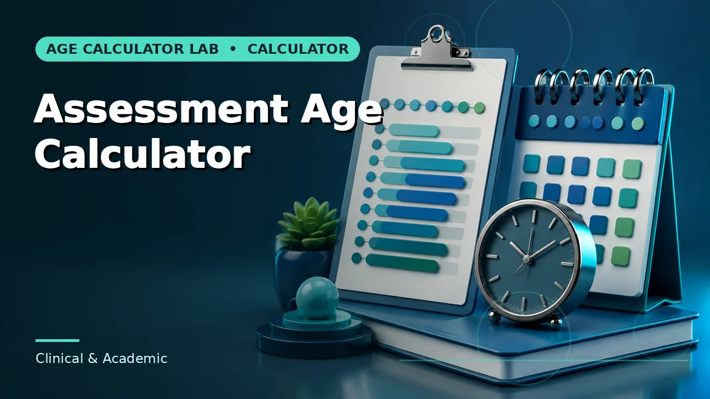

Quick answer
Calculate exact age first and apply the official band definition second. Never build the boundary assumption into the arithmetic.
Two separate operations
There is a calculation and there is a classification, and keeping them apart prevents most boundary errors. The calculation produces an exact age from two dates. The classification takes that age and applies a published rule to assign a band, a cohort or an eligibility status.
When the two are collapsed — when someone rounds while calculating because they know roughly where the boundary sits — the result cannot be audited. A reviewer sees a category and has no way to check whether the underlying age supports it.
Use this guide with the right tool: Open the Age Range Calculator for whether a calculated age falls within a custom minimum and maximum range. If the question shifts, compare it with the Assessment Age Calculator or the School Starting Age Calculator.
Inclusive and exclusive endpoints
A band described as "5 to 6 years" is ambiguous. It may mean from the fifth birthday up to but not including the sixth, or it may include children who have turned six. Policy documents are frequently loose about this in prose and precise about it in the underlying regulation.
The same applies to cutoff dates. "On or before 1 September" and "before 1 September" differ by exactly one day, and that day contains real children. Find the operative wording rather than the summary, and record which reading you applied.
Rounding is where bands get crossed
Rounding an age up before classification is the most common way a child ends up in the wrong band. A child at 5 years 11 months and 20 days is five, not six, for any rule expressed in completed years — but rounded to the nearest year they become six, and the classification follows the rounding rather than the rule.
Unless a rule explicitly instructs rounding, use completed units. Most eligibility and norm rules are written on completed years or completed months precisely because they are meant to be unambiguous at the boundary.
When the answer is close
Where an exact age falls within a few days of a boundary, treat that as a signal to verify rather than to decide. Confirm the date of birth against the source document, confirm the cutoff against the current published rule for the relevant jurisdiction or instrument, and confirm the endpoint convention.
It is also the point at which to document your reasoning in the file. A boundary decision that was correct on the rules as they stood should be defensible later, and that requires a record of which rule you applied and where you found it.
Worked example
The example is there to show the shape of the working. Your own dates will behave the same way; the rule that governs them may not.
Common mistakes to avoid
- Rounding age before classifying. Use completed units unless the rule says otherwise. Rounding is how children cross boundaries they should not.
- Assuming endpoints are inclusive. Find the operative wording. Inclusive and exclusive readings differ by one day, and that day matters.
- Applying a cutoff from a neighbouring jurisdiction. Cutoffs are set locally and change. Confirm the current rule for the specific authority.
Use the right calculator
These are the practical next step. Each opens with the calculator, states its method, and links onward when the question turns out to be a different one.



Frequently asked questions
Should I round if the age is very close to a boundary?
No. Being close is a reason to verify the inputs and the rule, not a reason to round toward the nearer band.
Where do I find the operative rule?
The responsible authority's current published policy or the instrument's current manual. A summary or a secondary source is not sufficient at a boundary.
Can a decision at the boundary be appealed?
That depends entirely on the authority and the type of decision. The calculator can only show what the exact age is.